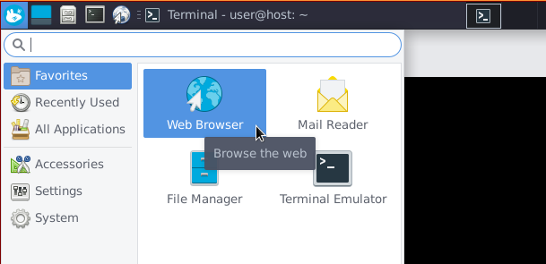
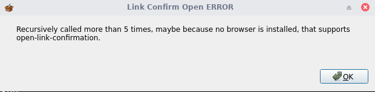
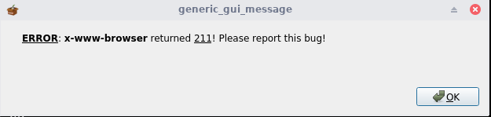
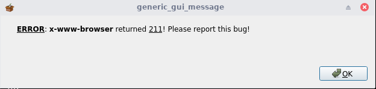
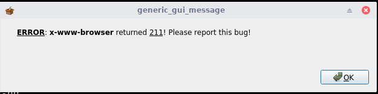
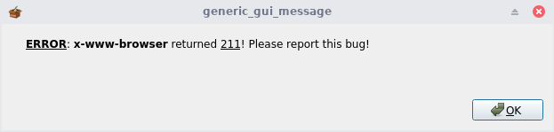

Since we dont have a default browser by default so any user who is morphing debian fresh install he will not have a browser as well (specially debian minimal version like netinst or CD…etc).
This will give annoying show annoying bug:

Will show a bug window which you need to press on OK multiple times to disappear:
1

2

3

4

5
